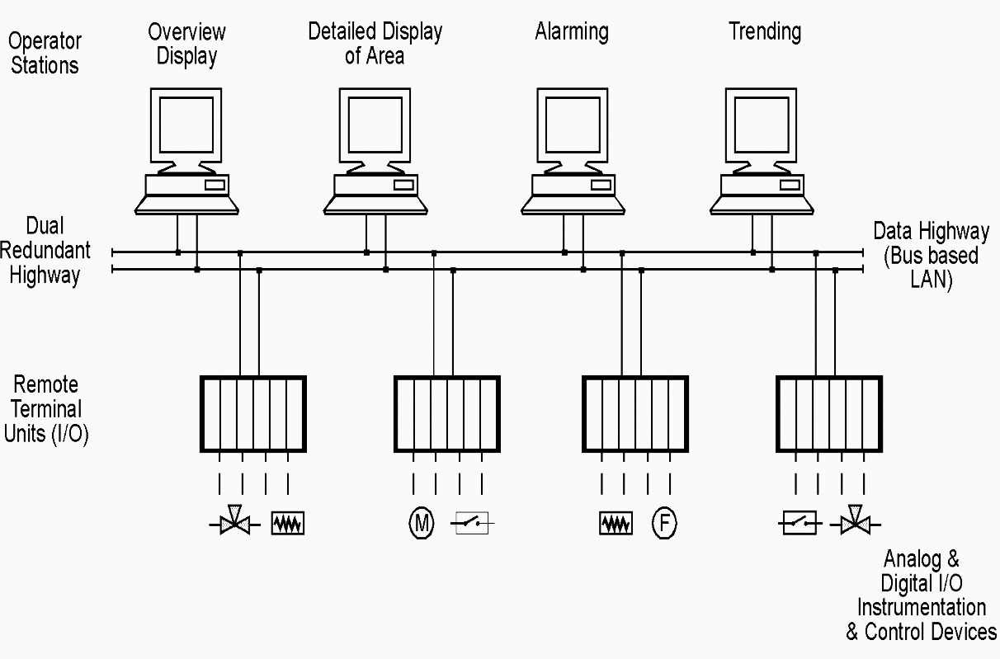
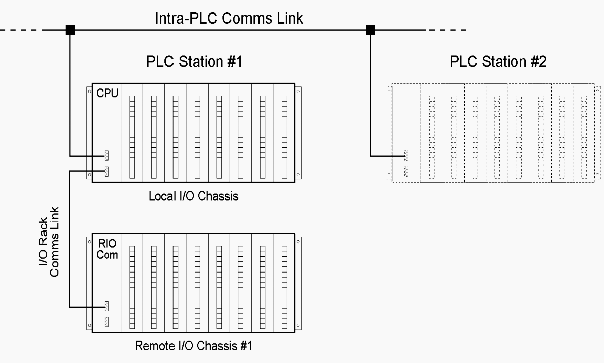

Explore some key terms and definitions associated with ICS/SCADA.
Distributed Control System
Describes a SCADA architecture in which the data acquisition and control functions are performed by
microprocessor-based units distributed throughout the process/network, and situated closer to the devices being controlled or the instruments
from which data are being gathered, than they are to the central/master station. DCS systems often provide
very sophisticated analog (loop) control capabilities, and a tightly integrated set of operator interfaces
(MMIs) that allow for easy system configurations and operator control.

Distributed Processing
Refers to the use of multiple individual central processing units (CPU) to work on the same program, function or system
to deliver capability more quickly and efficiently.
Human Machine Interface (HMI)
A software application that presents information to an operator or user about the state of a process, and accepts and implements
operators' control instructions.
Industrial Control System (ICS)
A combinations of control components (e.g., electrical, mechanical, hydraulic, pneumatic) that act together to achieve an industrial
objective (e.g., manufacturing, transportation of matter or energy).
Industrial Internet of Things (IIoT)
Refers to the use of smart sensors and actuators to enhance manufacturing and industrial processes, generally capturing and analyzing data
in real-time to drive business decisions faster and more accurately.
Local Area Network (LAN)
Hardware and computing devices interconnected through communication channels (e.g., wires, optic cables, WiFi)
to share resources within a limited area such as a residence, campus or office building. For example, a LAN might be used in a
utility plant for RTU communications to the Master given the short distances involved.
Open Protocol
Indicates that a given vendor's products can readily communicate with other vendors' products without the use of a
special interface or gateway.
Open Architecture
An infrastructure whose specifications are public as opposed to proprietary, to encourage third-party vendors to develop add-ons.
Programmable Logic Controller (PLC)
PLCs receive information from connected sensors or input devices, process the data, and trigger outputs based on pre-programmed
parameters. PLCs have replaced hardwired relays with a combination of ladder–logic software and solid state electronic
input and output modules. PLCs often are used in the implementation of RTUs because they offer a standard, cost-effective
hardware solution. PLCs have some overlaps with RTUs, but PLCs are better with local controls, for example, production lines or plants.

Proprietary Protocol
Indicates that a given vendor's products cannot readily communicate with other vendors' products without the use of a
special interface or gateway. Also called a closed protocol.
Remote Terminal (or Telemetry) Unit (RTU)
A standalone data acquisition and control unit - generally microprocessor based - that monitors,
controls and acquires data from process equipment at a remote location and transfers this data back to a central station.
In some cases the RTU might communicate on a peer-to-peer basis with other RTUs, or act as a "store and forward" relay station
for data from another RTU that may be inaccessible to the central station. RTUs have some functional overlaps with PLCs, but
RTUs are considered more suitable for wider geographical telemetry due to their wireless capabilities.
Smart Instrument
An intelligent (microprocessor based) digital measuring sensor (such as a flow meter) with digital data
communications provided to some diagnostic panel or computer based system. Both PLCs and DCS systems can interface to it.
Supervisory Control and Data Acquisition (SCADA)
A system of software and hardware elements that allows organizations to:
* Control industrial processes locally or at remote locations
* Monitor, gather and process real-time data
* Directly interact with devices such as sensors, valves, pumps and motors through human-machine interface (HMI) software
* Record events into log files
In a typical SCADA system there usually are five levels or hierarchies:
* Field level instrumentation and control devices
* Terminals and RTUs
* Communications system
* Master station(s)
* Commercial data processing computer system(s)
Wide Area Network (WAN)
Interconnected hardware and computing devices that extend over a large geographical distance and often employ
leased telecommunication lines to allows an enterprise to effectively carry out its daily automated processes regardless of location.
WAN technology is used in SCADA architectures to help integrate information throughout the system for improved efficiency and reduced
operational costs.